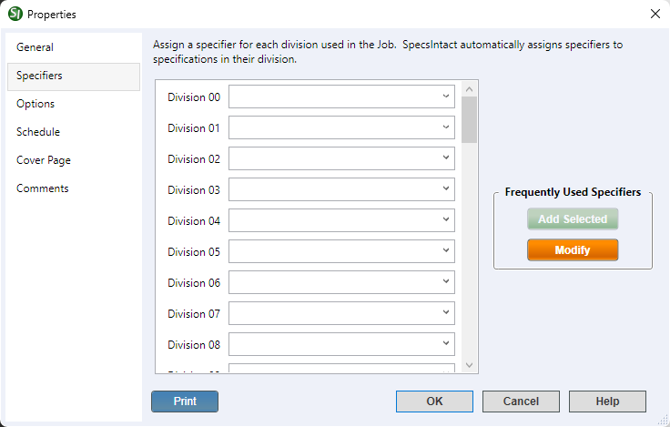

This command can also be executed from the SpecsIntact Explorer's Toolbar or Right-click menu.
The Specifiers tab provides the flexibility to refine and update specifier assignments for the selected Job or Master. This ensures that all details remain current throughout the project lifecycle, after the initial creation. Here, you can designate a specifier for each Division within a Job or Master, ensuring that all new Sections added are automatically assigned to the appropriate designer for that Division. Certain CSI MasterFormat Divisions (00-49) are initially disabled if your project's CSI MasterFormat version doesn't utilize them.
 The available options in SpecsIntact vary between Jobs and Masters, reflecting their distinct purposes and requirements. The Cover Page and Schedule tabs are exclusively available within Jobs.
The available options in SpecsIntact vary between Jobs and Masters, reflecting their distinct purposes and requirements. The Cover Page and Schedule tabs are exclusively available within Jobs.
 To assign a specifier, you have two convenient options. If your specifiers list has already been created, click the drop-down arrow and select the appropriate name. If you need to add a new specifier or if the name isn't on the existing list, you can either type a new name directly into the Division field or click the Modify button. The Modify button will open the Specifiers tab, which is located within the Setup menu > Options, allowing you to add new specifiers or manage your current list. To learn more about setting up and maintaining your specifier list, refer to the Setup menu > Options > Specifiers.
To assign a specifier, you have two convenient options. If your specifiers list has already been created, click the drop-down arrow and select the appropriate name. If you need to add a new specifier or if the name isn't on the existing list, you can either type a new name directly into the Division field or click the Modify button. The Modify button will open the Specifiers tab, which is located within the Setup menu > Options, allowing you to add new specifiers or manage your current list. To learn more about setting up and maintaining your specifier list, refer to the Setup menu > Options > Specifiers.
 Click the tabbed commands on the image below to see how to use each function.
Click the tabbed commands on the image below to see how to use each function.

- Frequently Used Specifiers - Provides the options to manage the list of specifiers.
- Add Selected button - Quickly adds the selected specifier to the list. You can enter the specifiers directly in the text boxes, or select one from the drop-down list generated through the Setup menu > Options > Specifiers tab.
- Modify button - Opens the Setup menu > Options > Specifiers tab to create, manage, or modify the list of specifiers. This is the most efficient way to add multiple names to the list.
- Print button - Opens the Project Properties Report that displays an all-inclusive export of your project's data, compiling information from each tab into one cohesive document. It offers a detailed summary of the entire project, making it ideal for sharing with your project team to support design review meetings.
Standard Windows Commands
 The OK button will execute and save the selections made.
The OK button will execute and save the selections made.
 The Cancel button will close the window without recording any selections or changes entered.
The Cancel button will close the window without recording any selections or changes entered.
 The Help button will open the Help Topic for this window.
The Help button will open the Help Topic for this window.